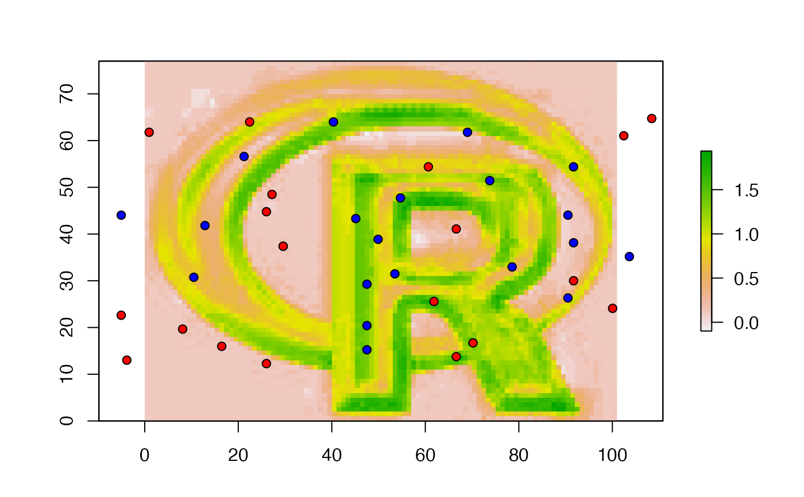
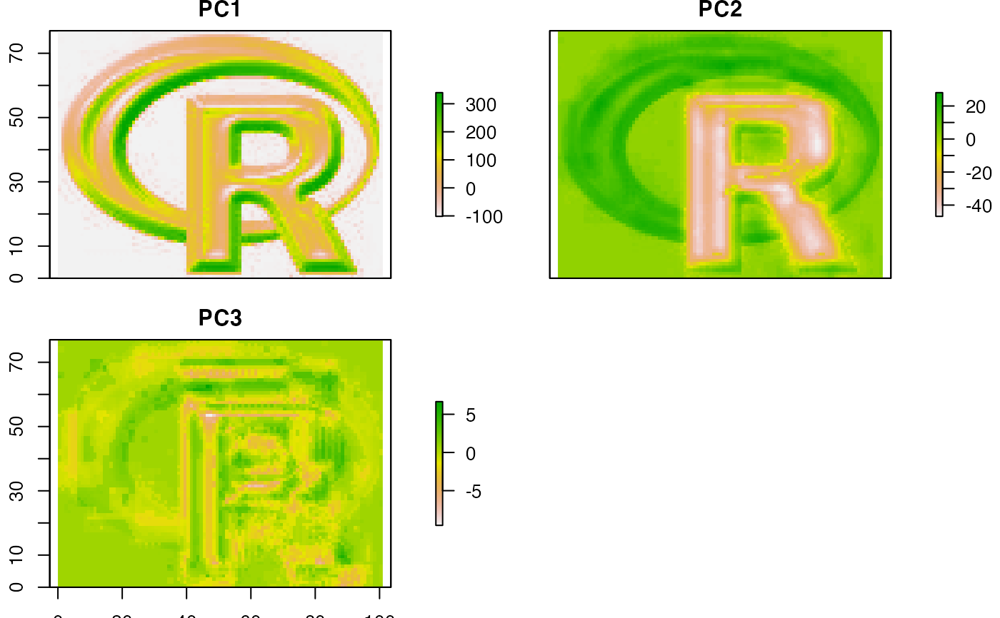

predict.RdMake a Raster object with predictions from a fitted model object (for example, obtained with lm, glm). The first argument is a Raster object with the independent (predictor) variables. The names in the Raster object should exactly match those expected by the model. This will be the case if the same Raster object was used (via extract) to obtain the values to fit the model (see the example). Any type of model (e.g. glm, gam, randomForest) for which a predict method has been implemented (or can be implemented) can be used.
This approach (predict a fitted model to raster data) is commonly used in remote sensing (for the classification of satellite images) and in ecology, for species distribution modeling.
# S4 method for Raster
predict(object, model, filename="", fun=predict, ext=NULL,
const=NULL, index=1, na.rm=TRUE, inf.rm=FALSE, factors=NULL,
format, datatype, overwrite=FALSE, progress='', ...)Raster* object. Typically a multi-layer type (RasterStack or RasterBrick)
fitted model of any class that has a 'predict' method (or for which you can supply a similar method as fun argument. E.g. glm, gam, or randomForest
character. Optional output filename
function. Default value is 'predict', but can be replaced with e.g. predict.se (depending on the type of model), or your own custom function.
Extent object to limit the prediction to a sub-region of x
data.frame. Can be used to add a constant for which there is no Raster object for model predictions. Particularly useful if the constant is a character-like factor value for which it is currently not possible to make a RasterLayer
integer. To select the column(s) to use if predict.'model' returns a matrix with multiple columns
logical. Remove cells with NA values in the predictors before solving the model (and return a NA value for those cells). This option prevents errors with models that cannot handle NA values. In most other cases this will not affect the output. An exception is when predicting with a boosted regression trees model because these return predicted values even if some (or all!) variables are NA
logical. Remove cells with values that are not finite (some models will fail with -Inf/Inf values). This option is ignored when na.rm=FALSE
list with levels for factor variables. The list elements should be named with names that correspond to names in object such that they can be matched. This argument may be omitted for standard models such as 'glm' as the predict function will extract the levels from the model object, but it is necessary in some other cases (e.g. cforest models from the party package)
character. Output file type. See writeRaster (optional)
character. Output data type. See dataType (optional)
logical. If TRUE, "filename" will be overwritten if it exists
character. "text", "window", or "" (the default, no progress bar)
additional arguments to pass to the predict.'model' function
Use interpolate if your model has 'x' and 'y' as implicit independent variables (e.g., in kriging).
RasterLayer or RasterBrick
# A simple model to predict the location of the R in the R-logo using 20 presence points
# and 50 (random) pseudo-absence points. This type of model is often used to predict
# species distributions. See the dismo package for more of that.
# create a RasterStack or RasterBrick with with a set of predictor layers
logo <- brick(system.file("external/rlogo.grd", package="raster"))
names(logo)
#> [1] "red" "green" "blue"
if (FALSE) {
# the predictor variables
par(mfrow=c(2,2))
plotRGB(logo, main='logo')
plot(logo, 1, col=rgb(cbind(0:255,0,0), maxColorValue=255))
plot(logo, 2, col=rgb(cbind(0,0:255,0), maxColorValue=255))
plot(logo, 3, col=rgb(cbind(0,0,0:255), maxColorValue=255))
par(mfrow=c(1,1))
}
# known presence and absence points
p <- matrix(c(48, 48, 48, 53, 50, 46, 54, 70, 84, 85, 74, 84, 95, 85,
66, 42, 26, 4, 19, 17, 7, 14, 26, 29, 39, 45, 51, 56, 46, 38, 31,
22, 34, 60, 70, 73, 63, 46, 43, 28), ncol=2)
a <- matrix(c(22, 33, 64, 85, 92, 94, 59, 27, 30, 64, 60, 33, 31, 9,
99, 67, 15, 5, 4, 30, 8, 37, 42, 27, 19, 69, 60, 73, 3, 5, 21,
37, 52, 70, 74, 9, 13, 4, 17, 47), ncol=2)
# extract values for points
xy <- rbind(cbind(1, p), cbind(0, a))
v <- data.frame(cbind(pa=xy[,1], extract(logo, xy[,2:3])))
#build a model, here an example with glm
model <- glm(formula=pa~., data=v)
#predict to a raster
r1 <- predict(logo, model, progress='text')
#>
|
| | 0%
plot(r1)
points(p, bg='blue', pch=21)
points(a, bg='red', pch=21)

# use a modified function to get a RasterBrick with p and se
# from the glm model. The values returned by 'predict' are in a list,
# and this list needs to be transformed to a matrix
predfun <- function(model, data) {
v <- predict(model, data, se.fit=TRUE)
cbind(p=as.vector(v$fit), se=as.vector(v$se.fit))
}
# predfun returns two variables, so use index=1:2
r2 <- predict(logo, model, fun=predfun, index=1:2)
if (FALSE) {
# You can use multiple cores to speed up the predict function
# by calling it via the clusterR function (you may need to install the snow package)
beginCluster()
r1c <- clusterR(logo, predict, args=list(model))
r2c <- clusterR(logo, predict, args=list(model=model, fun=predfun, index=1:2))
}
# principal components of a RasterBrick
# here using sampling to simulate an object too large
# to feed all its values to prcomp
sr <- sampleRandom(logo, 100)
pca <- prcomp(sr)
# note the use of the 'index' argument
x <- predict(logo, pca, index=1:3)
plot(x)

if (FALSE) {
# partial least square regression
library(pls)
model <- plsr(formula=pa~., data=v)
# this returns an array:
predict(model, v[1:5,])
# write a function to turn that into a matrix
pfun <- function(x, data) {
y <- predict(x, data)
d <- dim(y)
dim(y) <- c(prod(d[1:2]), d[3])
y
}
pp <- predict(logo, model, fun=pfun, index=1:3)
# Random Forest
library(randomForest)
rfmod <- randomForest(pa ~., data=v)
## note the additional argument "type='response'" that is
## passed to predict.randomForest
r3 <- predict(logo, rfmod, type='response', progress='window')
## get a RasterBrick with class membership probabilities
vv <- v
vv$pa <- as.factor(vv$pa)
rfmod2 <- randomForest(pa ~., data=vv)
r4 <- predict(logo, rfmod2, type='prob', index=1:2)
spplot(r4)
# cforest (other Random Forest implementation) example with factors argument
v$red <- as.factor(round(v$red/100))
logo$red <- round(logo[[1]]/100)
library(party)
m <- cforest(pa~., control=cforest_unbiased(mtry=3), data=v)
f <- list(levels(v$red))
names(f) <- 'red'
# the second argument in party:::predict.RandomForest
# is "OOB", and not "newdata" or similar. We need to write a wrapper
# predict function to deal with this
predfun <- function(m, d, ...) predict(m, newdata=d, ...)
pc <- predict(logo, m, OOB=TRUE, factors=f, fun=predfun)
# knn example, using calc instead of predict
library(class)
cl <- factor(c(rep(1, nrow(p)), rep(0, nrow(a))))
train <- extract(logo, rbind(p, a))
k <- calc(logo, function(x) as.integer(as.character(knn(train, x, cl))))
}